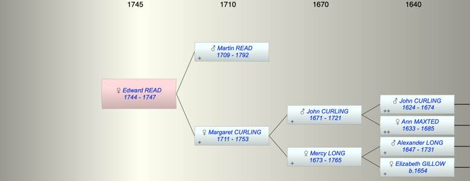

| [Index] |
| Edward READ (1744 - 1747) |
|  |
| b. 1744 at St Laurence |
| d. 1747 at St Laurence aged 3 |
| Parents: |
| Martin READ (1709 - 1792) |
| Margaret CURLING (1711 - 1753) |
| Siblings (4): |
| Margaret READ (1736 - ) |
| Martin READ (1740 - ) |
| John READ (1747 - ) |
| Mercy READ (1748 - 1749) |
| Events in Edward READ (1744 - 1747)'s life | |||||
| Date | Age | Event | Place | Notes | Src |
| 1744 | Edward READ was born | St Laurence | Note 1 | ||
| 1747 | 3 | Edward READ died | St Laurence | Note 2 | |
| Note 1: bap St Laurence 6 Jul 1744 ex FS |
| Note 2: burial 27 Dec 1747 at St Laurence ex FS |
| Created on a Mac™ using iFamily for Mac™ on 8 Oct 2023 |